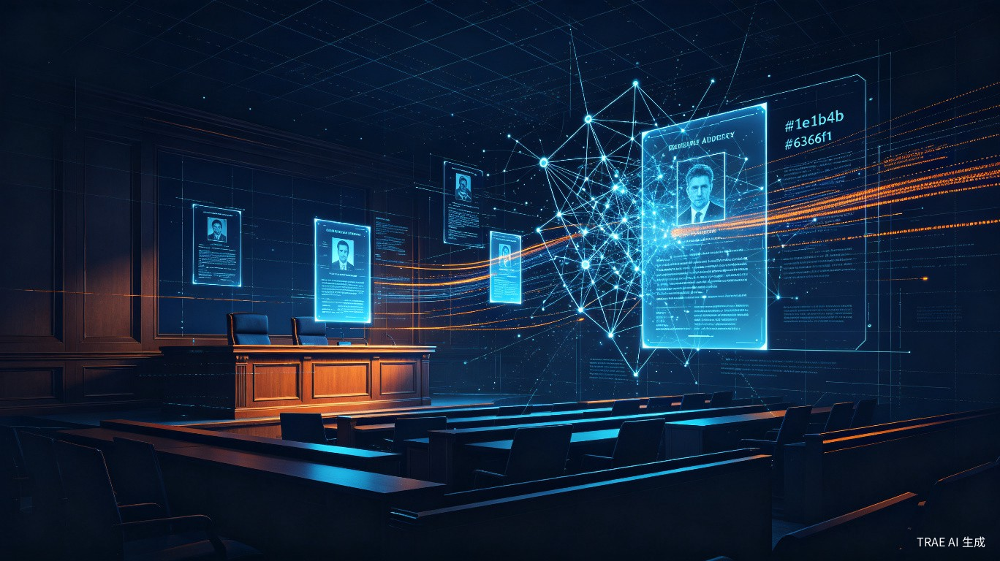

⚛️
React 19
UI 框架

AI 驱动的法学教育证据可视化平台
Contents · 目录
定位、背景与核心能力。
三层全栈 + AI Provider。
七步证据可视化流水线。
核心模型与 API 设计。
认证防护与容器化方案。
核心优势与展望。
Section · 01
从判决书到三维现场，AI 驱动的法学教学新范式。
Overview · 系统定位
从判决书、起诉书等非结构化法律文书中，利用 LLM 自动提取结构化证据信息。
基于确定性空间映射引擎，将文字描述转化为案发现场三维布局，生成可视化还原图。
支持场景全图、物证特写、伤情特写、书证（格子纸/A4/聊天截图）等多种图像。
自动生成 Markdown/HTML 格式的结构化分析报告，辅助法学课堂教学与案例分析。
Section · 02
前后端分离、容器化部署的现代全栈架构。
Architecture · 系统总览
UI 框架
类型安全
样式框架
组件库
路由+状态
构建工具
Web 框架
ORM
LLM 编排
图像处理
文件解析
认证
数据库
容器编排
反向代理
DB 迁移
CI/CD
Section · 03
从法律文书到可视化现场的七步流水线。
Pipeline · 业务流水线
PDF/DOCX/TXT
Unstructured
Instructor 结构化
教师确认/排除
确定性空间映射
DALL-E/FLUX/混元
Markdown/HTML
Section · 04
结构化数据模型与 RESTful 接口设计。
Data · 数据模型
| 模型 | 核心字段 | 说明 |
|---|---|---|
Case | title, status | pending → generated |
Evidence | category, type | 可提取/不确定/不可视化 |
Scene | name, room_type | 空间分区 |
SceneState | state_json | JSON 布局快照 |
GeneratedImage | type, provider | 场景图/特写/书证 |
User | email, role | JWT + RBAC |
API 端点
全流程覆盖
功能模块
认证/案件/证据/场景/图像
认证协议
JWT HS256 / 8天
权限模型
用户 + 超级管理员
Section · 05
企业级安全机制与容器化部署方案。
Security & Deploy · 安全部署
双算法 + 自动升级
dummy hash 一致响应
统一返回消息
环境变量白名单
禁止默认值
错误追踪 + 性能
Docker Volume 持久化
4 Workers + 健康检查
Bun 构建 → Nginx
反向代理 + 自动 HTTPS
14 个 CI/CD 工作流
Mailcatcher + Adminer + Playwright
Section · 06
AI + 法律教育的创新实践。
Highlights · 核心优势
支持 DeepSeek、OpenAI、Agnes 多种 LLM，Instructor 框架结构化输出，分类准确高效。
空间映射表而非 LLM 推理，结果可复现、可审计，适合教学场景。
DALL-E、FLUX、腾讯混元动态路由，灵活切换、降级容错。
基于 FastAPI 官方模板，完整认证、CI/CD、Docker 化部署，开箱即用。
JEVS — 司法证据可视化生成系统